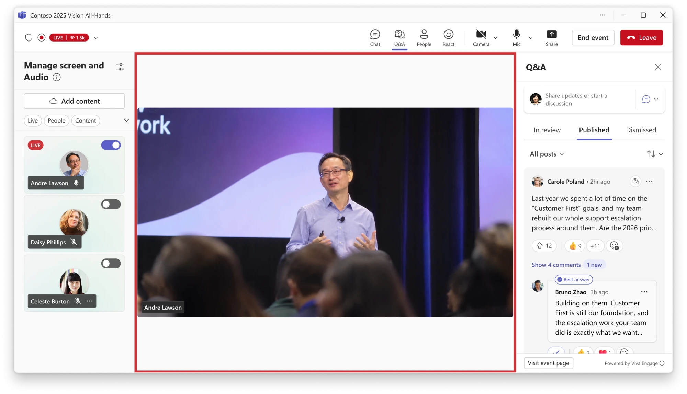
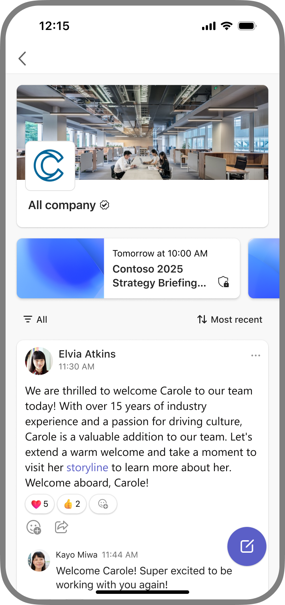
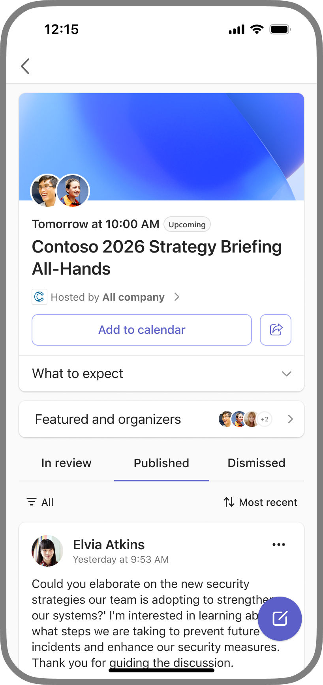

Teams Q&A +
Engage Events
I designed Teams Q&A and Engage events by bringing Q&A, AMAs, live events, and webinars together into one experience. Used by millions of people each month, it shipped in 2026 and became the foundation for the Events app in Microsoft Teams.
01 Context
Two features, each missing half an event
Viva Engage had AMAs, an ask-me-anything space where leaders and employees connect in a community. Teams had Q&A, a meeting tab where organizers manage questions live. Research with leaders and feedback from customers pointed to the same problem from both sides: neither one covered the whole event.
02 The solution
Together, they fill each other’s gaps
We proposed bringing AMAs and Teams Q&A together into one Viva Engage event: an event page with its own feed, linked to a live Teams meeting. Questions asked early carry into the meeting, and the conversation continues on the page afterward.
See how this became the Events app →03 Creation
One form for every kind of event
Organizers set everything up in one form: where the event lives, whether it’s a broadcast or a meeting, roles, who can attend, invites, and Q&A. Each part folds into an accordion that still shows its settings in small text when collapsed, so the whole event can be checked at a glance.
For companies made up of other companies, like Microsoft with LinkedIn and GitHub, a multi-tenant organization (MTO) toggle opens the event to people across all of them, not just the company the organizer is creating it from.
04 The event experience
Before, during, and after the event

Stage controls Choose who’s live Q&A moderation Same feed as the event page Back to the event pageOrganizers create the event in a community or storyline, and invites update on their own when plans change. Attendees can ask and upvote questions early.
Attendees watch next to the same feed while moderators review questions and presenters answer the most upvoted ones.
The recording stays with the conversation, and open questions can still be answered, so the feed keeps going.
05 Mobile
The same event, wherever you are
On mobile, events show up right in their communities, and the event page carries the same feed, so attendees can add it to their calendar, ask, and upvote from their phones.


06 Thinking bigger
One home for every Microsoft event
Next, we looked beyond Engage. Organizers can create town halls and webinars in Teams and link them to an Engage community, bringing Teams features like event page customization and registration to Engage users. That step toward unifying events across Microsoft became the starting point for the Events app.
Read more about the Events app →07 Impact
Built to last
- Millions
- of people use it each month
- 2026
- shipped, and became the foundation for the Events app
- 1 platform
- Engage events moving onto the same event platform as Teams